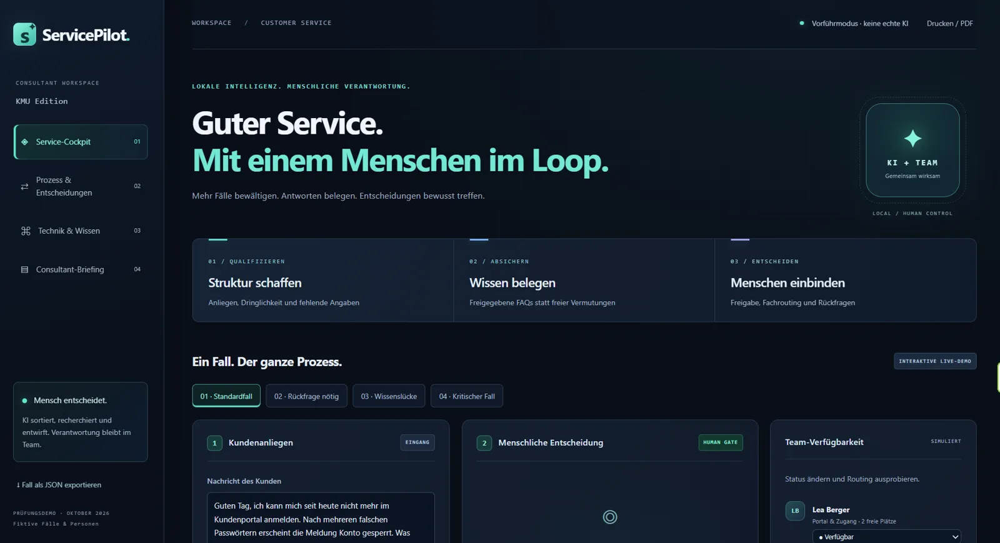
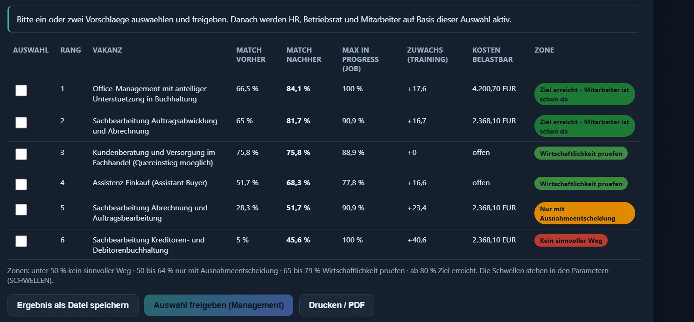

Verstehen: Potenziale finden
Ihr Unternehmen und Ihre Abläufe kennenlernen, Einsatzmöglichkeiten für KI erkennen und gemeinsam die sinnvollsten Schritte festlegen.
Von der ersten KI-Frage bis zum Agenten im Alltag: Ich finde mit Ihnen heraus, wo KI in Ihrem Unternehmen wirklich hilft, führe sie rechtssicher ein und schule Ihr Team. Für kleine und mittlere Unternehmen, persönlich vor Ort, Schulungen auch bundesweit online.
Ich begleite Sie von Anfang bis Ende, damit KI konkrete Aufgaben löst und im Arbeitsalltag genutzt wird. Der rechtliche Rahmen (EU AI Act, DSGVO) gehört in jedem Schritt dazu.
Ihr Unternehmen und Ihre Abläufe kennenlernen, Einsatzmöglichkeiten für KI erkennen und gemeinsam die sinnvollsten Schritte festlegen.
KI-Agenten, Orchestrierung und Entwicklung: von der Auswahl der Modelle bis zur laufenden Lösung, cloudbasiert oder lokal betrieben und rechtssicher.
Workshops und Trainings, die Ihr Team sicher im Umgang mit KI machen, inklusive der gesetzlichen KI-Kompetenzpflicht. Vor Ort oder bundesweit online buchbar.
Vom ersten Gespräch über den regelmäßigen Austausch bis zur Umsetzung. Jedes Paket hat einen klaren Umfang und ein greifbares Ergebnis. Preise netto zuzüglich Umsatzsteuer.
Für Inhaber und Geschäftsführer: ein Tag auf Augenhöhe, um Ihre Ideen zu prüfen und weiterzuentwickeln.
Ergebnis: Priorisierte Liste (jetzt umsetzen, später, lieber lassen), kurze Roadmap und Gesprächsnotiz.
Für Unternehmer, die regelmäßig am Ball bleiben und sich austauschen wollen.
Ergebnis: Sie bleiben dran, bekommen Antworten und lernen von anderen.
Für Unternehmer, die jemanden an ihrer Seite wollen: 1:1, vertraulich, auf Augenhöhe.
Ergebnis: Klare Entscheidungen und nächste Schritte für Ihr Unternehmen.
Für Teams bis ca. 10 Personen, die sicher mit KI arbeiten sollen.
Ergebnis: Das Team arbeitet sicher mit KI. Teilnahmebescheinigung zur KI-Kompetenz (EU AI Act, Art. 4).
Für Unternehmen mit einer konkreten Idee, die ausprobiert werden soll.
Ergebnis: Lauffähige Lösung mit Dokumentation.
Beispiele dafür, was mit KI möglich ist. Sie können sie direkt im Browser ausprobieren.

Serviceteams verlieren viel Zeit mit Suchen, Sortieren und Weiterreichen. ServicePilot ordnet eingehende Anfragen ein, erkennt fehlende Angaben, belegt Antworten aus freigegebenen FAQs und bereitet Entwürfe vor. Bei Wissenslücken oder kritischen Fällen stoppt die KI und schlägt eine passende Fachperson vor. Freigaben und Verantwortung bleiben beim Team. Die KI läuft lokal und die Daten verlassen das Haus nicht.
Die Demo arbeitet mit fiktiven Fällen und Personen. Es werden keine Nachrichten versendet.
Ungeplante Stillstände kosten kleine und mittlere Unternehmen Zeit und Geld, und die Signale dafür stecken längst in den Maschinendaten. FactoryPulse zeigt am Beispiel einer Lackierzelle, wie Messwerte wie Temperatur, Vibration, Druck und Motorstrom zusammenlaufen, schleichende Veränderungen erkannt und als erklärter Prüfhinweis sichtbar gemacht werden. Fehlende Sensorwerte werden nicht überspielt, und über jede Wartung entscheidet ein Mensch mit Begründung. Die Animation läuft live im Browser.
Die Demo arbeitet mit simulierten Messdaten und ohne Verbindung zu einer Anlage.

KI macht manche Tätigkeiten überflüssig, gleichzeitig fehlen Fachkräfte und es entstehen neue Positionen. Die Lösung gleicht die Kompetenzen vorhandener Mitarbeitender mit offenen Stellen ab und zeigt, welche Weiterbildung den Weg in eine neue Rolle öffnet, was sie kostet und wie hoch die Passung danach ist. Wirtschaftliche und rechtliche Vorgaben fließen mit ein und lassen sich frei einstellen. Die KI liest und formuliert, gerechnet wird nachvollziehbar und deterministisch. Das Ergebnis ist eine Entscheidungsgrundlage für das Management, keine automatische Personalentscheidung.
Die Demo arbeitet mit einem fiktiven Beispielfall und erfundenen Daten.
Ein Ablauf, gebaut mit n8n, liest jede Kundenanfrage, bewertet Stimmung und Dringlichkeit und bereitet die Antwort vor. Bei einer Beschwerde meldet er das Team sofort. Das Team prüft und versendet.
Die Animation zeigt fiktive Daten und ist kein aufgezeichneter Live-Lauf.
Was bewegt die KI-Welt? Neue Modelle, Forschung und Anwendungen – auf Deutsch zusammengefasst, mit Einordnung, Quellenlinks und einem Archiv der Tagesausgaben.
Wo KI heute steht, welche fünf Fehleinschätzungen Entscheidungen verzerren, wie sich die Technik entwickeln könnte und welche nächsten Schritte sich für Entscheider lohnen. Etwa acht Minuten Lesezeit.
Ich bin Dirk Sommerfeld, KI-Begleiter, Berater und Trainer in Berlin und Brandenburg. Ich unterstütze kleine und mittlere Unternehmen dabei, Einsatzmöglichkeiten für künstliche Intelligenz zu finden, KI einzuführen und den Umgang damit zu lernen. Gerade kleinere Unternehmen brauchen dafür jemanden in der Nähe, der zuhört und sie versteht.
Über 25 Jahre war ich selbst Unternehmer, in fast allen Rollen: als CTO, CEO und CFO, als Product Owner und Entwickler, als Ausbilder für Informatiker und als Berater für Gründer und Startups in der Consulty GmbH, wo ich auch das Business Development im Bereich HR verantwortet habe. Daraus stammt auch die HR-Demo oben. Ich kenne deshalb nicht nur die Technik, sondern auch die Fragen, die Unternehmer wirklich stellen: Was kostet das, was bringt es und wie nehme ich mein Team mit?
Mein Fundament ist die Technik. Ich bin mit vielen Technologien vertraut, aus Industrie, IoT, Maschinendaten und Cloud, denke gern voraus und arbeite mich schnell in neue Themen ein. Das hilft bei KI, wo sich fast jede Woche etwas ändert. Ergänzt habe ich es durch eine Ausbildung zum KI-Consultant bei WBS Training.
Mein Anspruch: KI so in Ihr Unternehmen einzubinden, dass sie konkrete Aufgaben löst, Abläufe verbessert und für Ihre Mitarbeitenden nutzbar wird.
Ob erste KI-Frage, Schulung oder konkretes Projekt: Der erste Schritt ist ein Gespräch.
Kontakt aufnehmen ↗